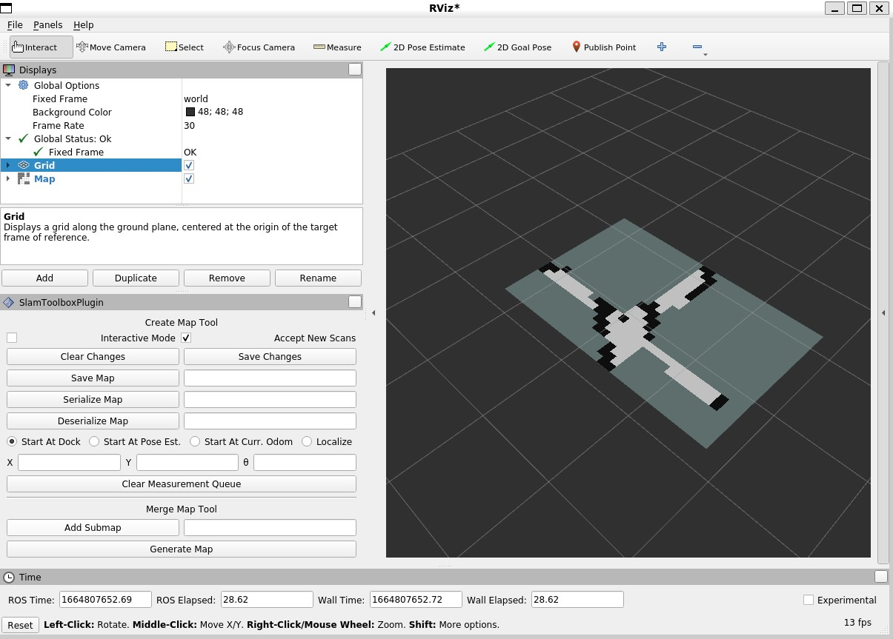

ROS 2 Tutorials
This page shows tutorials which connects the Crazyflie through Crazyswarm2 to with external packages like RVIZ2, teleop_twist_keyboard, SLAM toolbox and NAV2 bringup. Have fun!
Warning
These tutorials are for advanced use and still under development. Beware of errors and bugs and be sure to use https://github.com/IMRCLab/crazyswarm2/discussions for any support questions. Also this requires a bit of knowledge for ROS 2 so we highly recommend following their beginner tutorials.
Teleoperation keyboard
We have an example of the telop_twist_keyboard package working together with the crazyflie
First, make sure that the crazyflies.yaml has the right URI and if you are using the Flow deck or any other position system available to the crazyflie. set the controller to 1 (PID).
And if you have not already, install the teleop package for the keyboard. (replace DISTRO with humble or iron):
sudo apt-get install ros-DISTRO-teleop-twist-keyboard
Then, first checkout keyboard_velmux_launch.py and make sure that the ‘robot_prefix’ of vel_mux matches your crazyflie ID in crazyfies.yaml (‘cf231’).
Then run the following launch file to start up the crazyflie server (CFlib):
ros2 launch crazyflie_examples keyboard_velmux_launch.py
in another terminal run:
ros2 run teleop_twist_keyboard telop_twist_keyboard
Use ‘t’ to take off, and ‘b’ to land. For the rest, use the instructions of the telop package.
Vizualization with RVIZ2
Make sure your crazyflie knows its position, either by a flow deck or any other position system available to the crazyflie.
In crazyflie.yaml, make sure that this following is added or uncommented
all:
...
firmware_logging:
enabled: true
default_topics:
pose:
frequency: 10 # Hz
In the first terminal, launch the server (use backend:=cflib if you need the odom topic)
ros2 launch crazyflie launch.py
In the second terminal
rviz2
Then set ‘fixed frame’ to ‘world’ and add the TF plugin. Then in ‘TF’, check the ‘show names’ checkbox. The crazyflie names should appear with their estimated position.
This RVIZ2 visualization can be done for the default topics:
‘pose’: ‘/cf1/pose/’ Transforms and Pose
‘odom’: ‘/cf1/odom/’ Odometry
‘scan’: ‘/cf1/scan’ Scan
Here you can see an example of 5 crazyflies with the Pose default topic enabled, while taking off and landing
Mapping with the SLAM toolbox
You can connect the Crazyflie through ROS 2 with existing packages like the SLAM toolbox. With a Flow deck and Multi-ranger ) a simple map can be created.
Note
Mind that this will only show the mapping part of SLAM, as the ray matching with the sparse sensing Multi-ranger is quite challenging for the SLAM toolbox
Preperation
Assuming you have installed ROS 2 and Crazyswarm2 according to the instructions and went through the guides on Usage, now install the slam toolbox:
sudo apt-get install ros-DISTRO-slam-toolbox
Go to crazyflie/config/crazyflie.yaml, change the URI of the crazyflie to the one yours has and put the crazyflies you don’t use on ‘enabled: false’:
cf1:
enabled: true
uri: radio://0/20/2M/E7E7E7E701
And enable the following default topic logging:
firmware_logging:
enabled: true
default_topics:
odom:
frequency: 10 # Hz
scan:
frequency: 10 # Hz
Also, make sure that the standard controller is set to 1 (PID) for the flowdeck and the state estimator is set to 2 (kalman):
firmware_params:
stabilizer:
estimator: 2 # 1: complementary, 2: kalman
controller: 1 # 1: PID, 2: mellinger
Connecting with the Crazyflie
Let’s first look at the launch file real quick (multiranger_mapping_launch.py):
return LaunchDescription([
Node(
package='crazyflie',
executable='crazyflie_server.py',
name='crazyflie_server',
output='screen',
parameters=[server_params],
),
Node(
package='crazyflie',
executable='vel_mux.py',
name='vel_mux',
output='screen',
parameters=[{"hover_height": 0.3},
{"incoming_twist_topic": "/cmd_vel"},
{"robot_prefix": "/cf1"}]
),
Node(
parameters=[
{'odom_frame': 'odom'},
{'map_frame': 'world'},
{'base_frame': 'cf1'},
{'scan_topic': '/cf1/scan'},
{'use_scan_matching': False},
{'max_laser_range': 3.5},
{'resolution': 0.1},
{'minimum_travel_distance': 0.01},
{'minimum_travel_heading': 0.001},
{'map_update_interval': 0.1}
],
package='slam_toolbox',
executable='async_slam_toolbox_node',
name='slam_toolbox',
output='screen'),
])
Here is an explanation of the nodes:
The first node enables the crazyflie server, namely the python version (cflib) as that currently has logging enabled. This takes the crazyflies.yaml file you just edited and uses those values to set up the crazyflie.
The second node is a velocity command handler, which takes an incoming twist message, makes the Crazyflie take off to a fixed height and enables velocity control of external packages (you’ll see why soon enough).
The third node is the slam toolbox node. You noted that we gave it some different parameters, where we upped the speed of the map generation, decreased the resolution and turn of ray matching as mentioned in the warning above.
Turn on your crazyflie and put it in the middle of the room you would like to map. Make sure to mark the starting position for later.
Now startup the crazyflie server with the following example launch file, after sourcing the ‘setup.bash’ of course:
source install/setup.bash
ros2 launch crazyflie_examples multiranger_mapping_launch.py
You should now see the M4 LED blinking green and red and the following appear on the screen:
[INFO] [launch]: All log files can be found below /home/knmcguire/.ros/log/2022-10-03-16-15-53-553693-kim-legion-15498
[INFO] [launch]: Default logging verbosity is set to INFO
[INFO] [crazyflie_server.py-1]: process started with pid [15500]
[INFO] [vel_mux.py-2]: process started with pid [15502]
[INFO] [async_slam_toolbox_node-3]: process started with pid [15504]
[async_slam_toolbox_node-3] [INFO] [1664806553.866149124] [slam_toolbox]: Using solver plugin solver_plugins::CeresSolver
[vel_mux.py-2] [INFO] [1664806559.174521891] [vel_mux]: Velocity Multiplexer set for /cf1 with height 0.3 m using the /cmd_vel topic
[crazyflie_server.py-1] [INFO] [1664806560.043101845] [crazyflie_server]: radio://0/20/2M/E7E7E7E701 is fully connected!
[crazyflie_server.py-1] [INFO] [1664806560.044138096] [crazyflie_server]: All Crazyflies are fully connected!
[crazyflie_server.py-1] [INFO] [1664806560.054259470] [crazyflie_server]: radio://0/20/2M/E7E7E7E701: commander.enHighLevel is set to 1
[crazyflie_server.py-1] [INFO] [1664806560.105691178] [crazyflie_server]: radio://0/20/2M/E7E7E7E701: stabilizer.controller is set to 1
[crazyflie_server.py-1] [INFO] [1664806560.107138259] [crazyflie_server]: radio://0/20/2M/E7E7E7E701: stabilizer.estimator is set to 2
[crazyflie_server.py-1] [INFO] [1664806560.114968490] [crazyflie_server]: All Crazyflies parameters are initialized
[crazyflie_server.py-1] [INFO] [1664806560.116479518] [crazyflie_server]: radio://0/20/2M/E7E7E7E701 setup logging for scan at freq 10
[crazyflie_server.py-1] [INFO] [1664806560.118522365] [crazyflie_server]: radio://0/20/2M/E7E7E7E701 setup logging for odom at freq 10
[crazyflie_server.py-1] [INFO] [1664806560.123137907] [crazyflie_server]: All Crazyflies loggging are initialized
[async_slam_toolbox_node-3] [INFO] [1664806560.329904109] [slam_toolbox]: Message Filter dropping message: frame 'cf1' at time 1664806560.232 for reason 'discarding message because the queue is full'
[async_slam_toolbox_node-3] Info: clipped range threshold to be within minimum and maximum range!
[async_slam_toolbox_node-3] [WARN] [1664806560.333439709] [slam_toolbox]: maximum laser range setting (3.5 m) exceeds the capabilities of the used Lidar (3.5 m)
[async_slam_toolbox_node-3] Registering sensor: [Custom Described Lidar]
If anything is off, check if the crazyflie.yaml has been configured correctly!
Now, open up a rviv2 window in a seperate terminal with :
source /opt/ros/DISTRO/setup.bash
rviz2
Add the following displays and panels to RVIZ:
Changed the ‘Fixed frame’ to ‘world
‘Add’ button under displays and ‘by topic’ tab, select the ‘/map’ topic.
‘Add’ button under displays and ‘by display type’ add a transform.
‘Panels’ on the top menu, select ‘add new panel’ and select the SLAMToolBoxPlugin
It should look like something like this:
Flying and mapping
While still connected to the crazyflie with the server, open another terminal and type:
source /opt/ros/DISTRO/setup.bash
ros2 run teleop_twist_keyboard teleop_twist_keyboard
and make the crazyflie take off with the ‘t’ key on your keyboard. Now fly around the room to make a map of it.
Note
Tip: start with turning slowly with yaw, which should be enough to get most of the room.
Once you are happy, you can save the map with ‘Save Map’ in the SLAM toolbox panel, and land the crazyflie with ‘t’ with teleop_twist_keyboard.
If not, you could tweak with the parameters of the SLAM toolbox to get a better result.